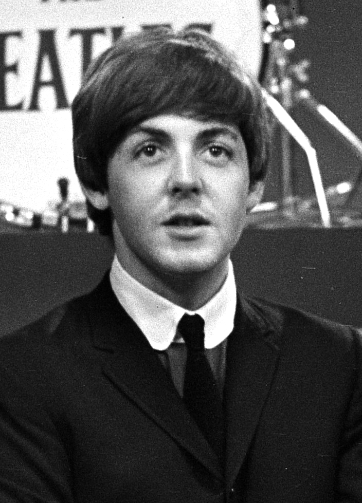

The Beatles

Paul McCartney

James Paul McCartney é um cantor, compositor, multi-instrumentista, empresário, produtor musical, cinematográfico e ativista dos direitos dos animais britânico. McCartney alcançou fama mundial como membro da banda de rock britânica The Beatles, com John Lennon, George Harrison e Ringo Starr.
Nascimento: 18 de junho de 1942 (idade 80 anos), Walton, Liverpool, Reino Unido